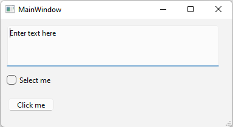
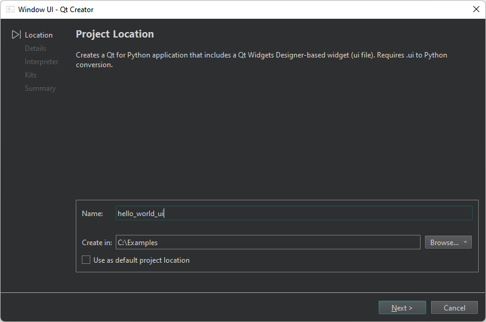
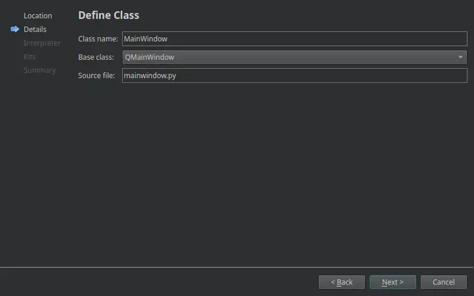
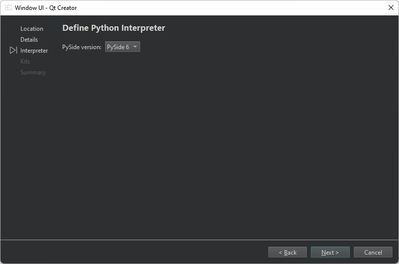
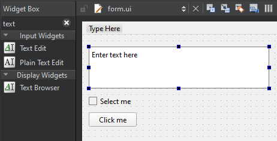

Tutorial: Qt Widgets UI and Python
First, create a Qt for Python application project. Then, use the integrated Qt Widgets Designer to design a widgets-based UI.

For more examples of creating Qt for Python applications, see Qt for Python Examples and Tutorials.
Create a window UI project
To create a Qt for Python application that has the source file for a main class:
- Go to File > New Project.
- Select Application (Qt for Python) > Window UI > Choose to open the Project Location dialog.

- In Name, enter the project name. For example, hello_world_ui.
- In Create in, enter the path for the project files. For example,
C:\Examples. - Select Next (on Windows and Linux) or Continue (on macOS) to open the Define Class dialog.

- In Class name, select MainWindow as the class name.
- In Base class, select QMainWindow as the base class.
Note: The Source file field is automatically updated to match the name of the class.
- In Project file, enter a name for the project file.
- Select Next or Continue to open the Define Python Interpreter dialog.

- In PySide version, select the PySide version of the generated code.
- Select Next or Continue to open the Kit Selection dialog.

- Select Python kits for building, deploying, and running the project. By default, this creates a virtual environment for the project inside the source directory. To use the global interpreter, select the build configuration with the same name as the Python of the kit in Details.
- Select Next or Continue.
- Review the project settings, and select Finish (on Windows and Linux) or Done (on macOS) to create the project.
The wizard generates the following files:
form.ui, which is the UI file for the window UI.pyproject.toml, which lists the files in the Python project and other configurations.mainwindow.py, which has some boilerplate code for a class.requirements.txt, which stores the PySide version of the generated code. You can use this file to install the required PySide version using pip.
Install PySide6 for the project
In the Edit mode, select Install to set up PySide6 for the project.

Design a widgets-based UI
- In the Edit mode, double-click the
form.uifile in the Projects view to launch the integrated Qt Widgets Designer. - Drag the following widgets from Widget Box to the form:
- Text Edit (QTextEdit)
- Check Box (QCheckBox)
- Push Button (QPushButton)

Note: To easily locate the widgets, use the search box at the top of the Widget Box. For example, to find the Text Edit widget, start typing the word text.
- Double-click the Text Edit widget and enter the text Enter text here.
- Double-click the Check Box widget and enter the text Select me.
- Double-click the Push Button widget and enter the text Click me.
- Select Ctrl+S (or Cmd+S) to save your changes.
For more information about designing UIs with Qt Widgets Designer, see Qt Widgets Designer Manual.
Run the application
Select  (Run) to run the application.
(Run) to run the application.
See also Tutorial: Qt Quick and Python, Tutorial: Qt Widgets and Python, and Develop Qt for Python Applications.